NODE 001 / OBSERVATION · DISCOVERY
Vesper
Recognizes original work, records verified discoveries, and celebrates creators without manufacturing community activity.
Explore observationNot mascots. Not unaccountable artificial authorities. The Institute entities give discovery, recognition, and community stewardship a mysterious but unmistakable presence within ANEVUM.

Recognizes original work, records verified discoveries, and celebrates creators without manufacturing community activity.
Explore observation
Prioritizes reports, assists staff review, and communicates legitimate moderation outcomes. Enforcement authority remains with authorized humans.
Explore regulationSubmissions pass real safety checks, qualify for documented criteria, undergo editorial review, and then produce a traceable feature record. No invented daily winners or paid ranking advantages.
Reports and machine-generated signals are triaged to authorized staff. Staff actions require recorded reasons and leave an audit trail. Automation does not grant itself elevated account permissions.